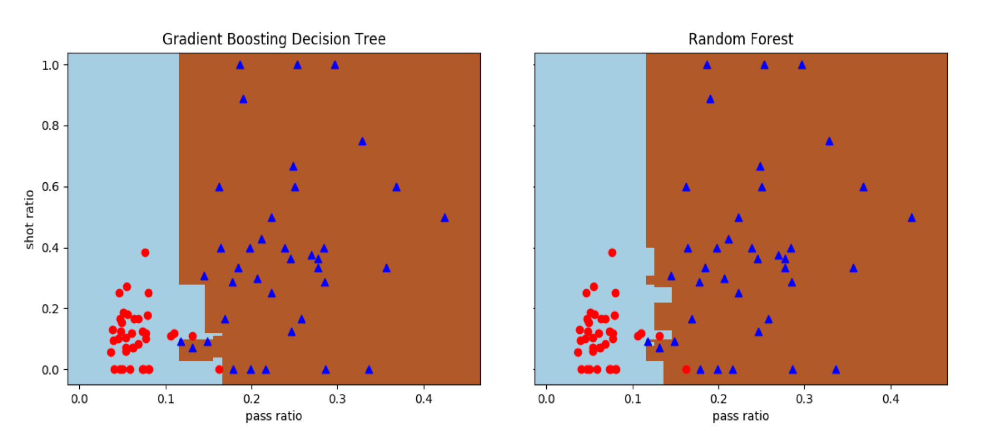
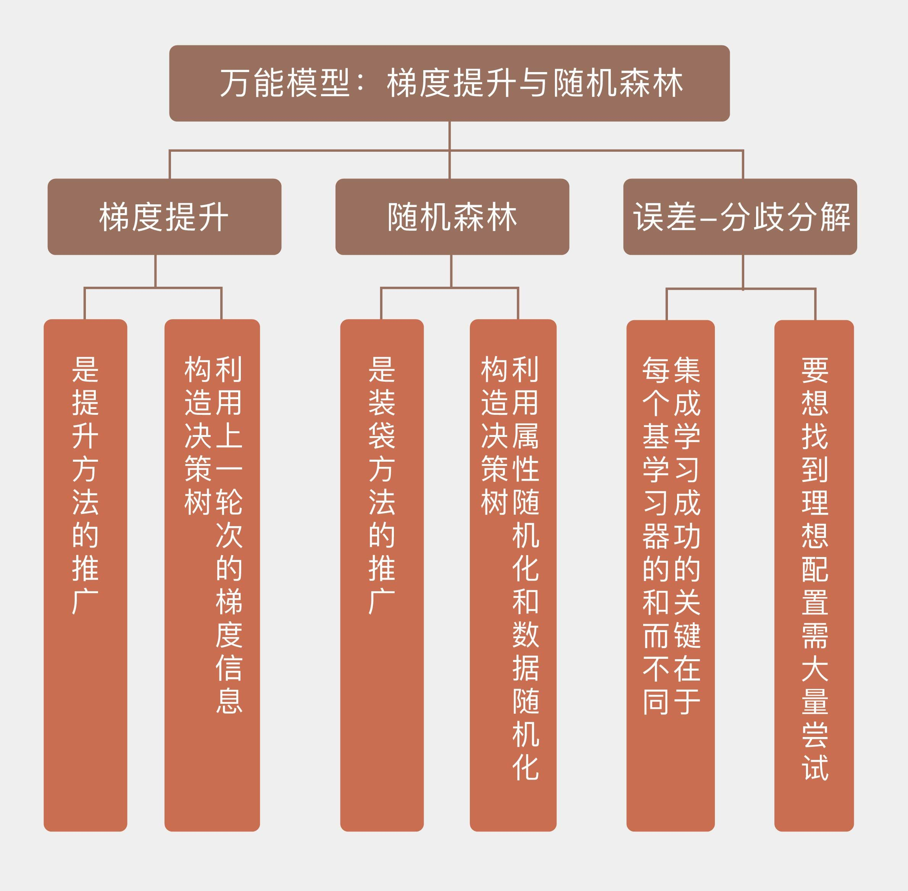

- 00 开篇词 打通修炼机器学习的任督二脉.md.html
- 01 频率视角下的机器学习.md.html
- 02 贝叶斯视角下的机器学习.md.html
- 03 学什么与怎么学.md.html
- 04 计算学习理论.md.html
- 05 模型的分类方式.md.html
- 06 模型的设计准则.md.html
- 07 模型的验证方法.md.html
- 08 模型的评估指标.md.html
- 09 实验设计.md.html
- 10 特征预处理.md.html
- 11 基础线性回归：一元与多元.md.html
- 12 正则化处理：收缩方法与边际化.md.html
- 13 线性降维：主成分的使用.md.html
- 14 非线性降维：流形学习.md.html
- 15 从回归到分类：联系函数与降维.md.html
- 16 建模非正态分布：广义线性模型.md.html
- 17 几何角度看分类：支持向量机.md.html
- 18 从全局到局部：核技巧.md.html
- 19 非参数化的局部模型：K近邻.md.html
- 20 基于距离的学习：聚类与度量学习.md.html
- 21 基函数扩展：属性的非线性化.md.html
- 22 自适应的基函数：神经网络.md.html
- 23 层次化的神经网络：深度学习.md.html
- 24 深度编解码：表示学习.md.html
- 25 基于特征的区域划分：树模型.md.html
- 26 集成化处理：Boosting与Bagging.md.html
- 27 万能模型：梯度提升与随机森林.md.html
- 28 最简单的概率图：朴素贝叶斯.md.html
- 29 有向图模型：贝叶斯网络.md.html
- 30 无向图模型：马尔可夫随机场.md.html
- 31 建模连续分布：高斯网络.md.html
- 32 从有限到无限：高斯过程.md.html
- 33 序列化建模：隐马尔可夫模型.md.html
- 34 连续序列化模型：线性动态系统.md.html
- 35 精确推断：变量消除及其拓展.md.html
- 36 确定近似推断：变分贝叶斯.md.html
- 37 随机近似推断：MCMC.md.html
- 38 完备数据下的参数学习：有向图与无向图.md.html
- 39 隐变量下的参数学习：EM方法与混合模型.md.html
- 40 结构学习：基于约束与基于评分.md.html
- 如何成为机器学习工程师？.md.html
- 总结课 机器学习的模型体系.md.html
- 总结课 贝叶斯学习的模型体系.md.html
- 结课 终有一天，你将为今天的付出骄傲.md.html
- 捐赠
27 万能模型：梯度提升与随机森林
上一篇文章中我和你分享了提升法和装袋法这两种典型的集成方法，它们都可以用在决策树模型上，对多棵不同的树进行组合。然而直接使用这两种集成方法只是初级的策略，将它们的强化版用在决策树上可以得到更加强大的万能模型，也就是梯度提升决策树和随机森林。
梯度提升（gradient boosting）的思想来源于对提升方法的推广。显式的提升方法本身可以解释为对一个合适的损失函数的优化，如果将损失函数的选择扩展为任意的可微函数，并将提升方法和最优化中的梯度下降（gradient descent）结合起来，得到的就是梯度提升。
梯度提升将提升方法视为函数式的迭代梯度下降算法，通过迭代地选择指向负梯度方向的函数，也就是弱学习器来优化整个函数空间上的代价函数。在AdaBoost中，每个弱学习器的短板通过权重的加强得以凸显；而在梯度提升中，凸显的方式被替换成了梯度。
要理解梯度提升方法的妙处，还是要先从回归问题说起。在解决回归问题时，模型的输出\(f({\\bf x})\)和真实值\(y\)之间的差值\(h({\\bf x}) = y - f({\\bf x})\)被称为残差（residual），它表示了数据中模型所不能刻画的那些部分。
传统的单一模型对残差无能为力，可集成方法的引入给处理残差提供了新的思路，那就是用新的基学习器去拟合残差，作为对上一个模型的修正。将拟合真实值\(y\)和拟合残差\(h\)的模型集成起来，可以获得更加精确的拟合结果。
上面的过程类似于日常生活中的猜数字游戏。要猜测未知的数字，我先要随机地选择一个初始值进行猜测，再根据猜测值和真实值之间的大小关系来调整。随着一轮轮猜测的不断进行，猜测的结果就会越来越接近真实的未知数字，这个逼近真实值的过程就是不断拟合残差的过程。
思考一下回归问题中的梯度下降，你就会发现它和残差拟合实际上是等效的。如果以均方误差\(\[y - f({\\bf x})\] ^ 2 / 2\)作为损失函数，那么对\(f({\\bf x})\)计算出的梯度就等于\(f({\\bf x}) - y\)。这意味着残差和负梯度是完全一致的，对残差的拟合就是对模型负梯度的拟合，而根据残差来更新集成后的模型实际上就是根据负梯度来进行更新。这样一来，梯度提升方法就变成了广义上的梯度下降。
这里我们不妨对原始梯度下降和梯度提升加以比较：梯度下降算法中的负梯度和梯度提升方法中的残差在数学上是等价的，但意义却有所不同。负梯度指向的是单个模型参数更新的方向，残差则表示了集成模型下一个模型的拟合目标。梯度的不断下降可以让模型的参数逐渐收敛到最优参数上，而残差的不断拟合则让集成之后的模型越来越接近真实的数据生成机制。
从这种等价关系出发，以梯度的角度构造提升方法会带来更多的便利，其中最重要的一点就是损失函数的重新定义。梯度提升方法本身是建立在负梯度和残差之间等价关系的基础上的，可是一旦有了这种等价关系，我们反过来又可以放弃狭义的残差，从广义的损失函数的负梯度角度去构造提升方法。这样的过程其实就是从特殊到一般，再从一般到特殊的认识思路。
以决策树作为基学习器，使用梯度提升方法进行集成，得到的就是梯度提升决策树（gradient boosting decision tree, GBDT）。在每一轮的提升过程中，GBDT都会使用决策树来拟合计算出负梯度，因此整个模型就是一大堆决策树的组合。
在解决分类问题时，GBDT中的负梯度可以表示成样本归属于每个类别的真实概率和上一轮预测概率的差值，这个差值会被回归树拟合，拟合值与上一轮预测概率求和就是这一轮的输出。
GBDT是利用提升方法生成的全能模型，它在装袋方法上的对应是随机森林。
随机森林（ramdom forest）由若干个随机树（random tree）模型组成，每一棵单独的随机树都采用自助采样作为数据重采样的手段，但只会随机选择少量的特征用于生成树结构，这样生成的随机树也无需进行剪枝的处理。
这个算法其实是两种随机化方法——属性随机化和数据随机化的组合，两种随机化方法就像是倚天剑和屠龙刀，刀剑互斫才生出随机森林这本旷世秘籍。
属性随机化的思想也叫随机子空间方法（random subspace method），由香港学者Ho Tin-Kam首先提出。
属性随机化的好处在于让每个单独的基学习器不会过分关注在训练集中具有高度预测性或者描述性的特征，这样的特征虽然在训练数据中举足轻重，却将对数据的解释限制在狭窄的范围之内，未必能对测试数据进行精确预测。而随机抽取出的不同属性构成了不同的随机子空间，应用不同的随机子空间去训练不同的单个决策树。其实就是集成学习中非常重要的多样性思想（diversity）的体现。
归根结底，属性随机化的作用还是在于机器学习中老生常谈的问题，那就是提升泛化性能，抑制过拟合。
对于每棵单独的决策树来说，如果在训练集上能达到100%的正确率，那么它所生成的分类边界就适用于所有在所选择属性上和训练数据具有相同取值的新数据，即使这些新数据在没有用于这棵特定决策树分类的属性上有不同的取值也没关系。
这样一来，森林里的每棵树就在不同的随机子空间，也就是在不同的角度上进行泛化，从而给模型整体的泛化带来更多的可能性。相比之下，无论是预剪枝还是后剪枝，都是针对将所有属性视为整体的决策树的正则化，其效果就来得不如随机子空间好。
虽然Ho Tin-Kam在随机子空间的基础上进一步提出了随机森林的方法以及名称，但她的工作侧重于生成随机化的分类判别式，从头到尾都没有涉及对数据的自助重采样，而这恰恰被视为随机森林的核心。
数据随机化是由从统计学半路出家的莱奥·布雷曼（之前的文章中也提到过这位老先生）提出，他在此基础上进一步发展出了我们今天所熟知的随机森林模型。
数据随机化最主要的作用在于去除各独立模型之间的相关性，这个装袋方法的思想一脉相承。单棵决策树会对它自己的训练集中潜在的噪声高度敏感，但只要不同的树之间有较好的独立性，这种敏感特性就不会扩散到整个森林里。
此外，数据随机化的作用还体现在包外样本上。对于装袋法这种有放回的采样来说，大概会有三分之一的数据在训练过程中不会被用到，这部分未利用的数据就是包外样本（out-of-bag sample）。包外样本实际上起到了验证集的作用，可以证明，在包外样本计算出来的错误率是真实错误率的无偏估计，这就给算法的评估提供了一个比较靠谱的参考。
随机森林是一种比较复杂的模型，从不同的角度去观察它，就可以和不同的其他模型建立联系。由于一个样本可以出现在森林里的不同决策树上，在不同的决策树上又会归属于不同的叶子结点，所有和这个样本归属于同一个叶子结点的其他样本都会对它产生影响。
这样看来，随机森林就是局部化的近邻模型的拓展，和传统的\(k\)近邻算法不同的是，不同近邻点的权重并不相等，而是取决于树的结构和训练数据的结构。将这一思路再延伸一步，还可以建立起随机森林和核方法之间的联系。
除了局部化之外，随机森林又可以看成是对数据进行分布式建模的产物。每一个样本本身是定义在高维空间之上的，但属性随机化起到了降维的作用，将样本映射到随机子空间中，再在不同的低维空间上从不同属性出发来定义同一个样本，这和深度学习的想法不谋而合。只不过随机森林并不具备深度学习的层次化结构，而是直接将分布式的表征赋予同等地位，进行扁平化的组合，这固然可以简化运算，却也限制了表达能力的提升。
在Scikit-learn中，这两种万能模型都定义在ensemble模块中，分别是GradientBoostingClassifier和RandomForestClassifier类。将这两种方法应用在前面使用的线性不可分的数据集上，可以得到不同的正确分类边界。但这个轻量级的实例只是用来对模型产生直观的认识，将这两种模型用在这样简单的数据集上有些杀鸡用牛刀的意味。

GBDT和随机森林对曼城-西布朗数据集的分类结果
最后让我们来看一看集成学习中的一个理论问题，就是误差-分歧分解（error-ambiguity decomposition）。在集成方法中，假定最终的输出结果\(f(x)\)是每个基学习器单独输出的线性组合\(\\sum_{i=1}^N w_if_i(x)\)，其中线性系数全部为正且和为1，那么每个基学习器的分歧就可以表示为
\[ a_i(x) = \[f(x) - f_i(x)\] ^ 2 \]
集成模型的分歧是所有基学习器的分歧的线性组合
\[ a(x) = \\sum\\limits_{i = 1}^N w_ia_i(x) \]
这个表达式可以看成是所有独立输出对加权平均求出的加权方差。如果直接拿每个基学习器的结果和真实的输出\(y(x)\)做比较的话，每个基学习器和集成模型各自的均方误差就可以写成
\[ e_i(x) = \[y(x) - f_i(x)\] ^ 2, e(x) = \[y(x) - f(x)\] ^ 2 \]
对上面的表达式做一些数学处理，就可以得到集成模型分歧和均方误差之间的关系
\[ e(x) = {\\bar e}(x) - a(x) = \\sum\\limits_{i = 1}^N w_ie_i(x) - a(x) \]
将每个基学习器的分歧\(a_i(x)\)和误差\(e_i(x)\)，以及集成模型的误差\(e(x)\)在数据的概率分布上积分，就可以得到它们在数据集上的数学期望\(A_i\)、\(E_i\)和\(E\)。再以加权系数\(w_i\)对\(A_i\)和\(E_i\)进行线性组合，又可以得到模型分歧的集成\(\\bar A\)和误差的集成\(\\bar E\)。这时，集成模型的泛化误差就可以表达为
\[ E = {\\bar E} - {\\bar A} \]
这个表达式就是泛化误差的误差-分歧分解，它解释了集成学习中强调多样性的原因。表达式的第一项是基学习器关于真实结果的加权平方误差，第二项则是基学习器关于集成结果的加权平方误差。各基学习器之间的相关性越小，它们和集成结果之间的差别就越大，计算出的分歧也就越大。通过增加个体的方差来减小集体的方差，这就是集成学习的奇妙之处。
误差-分歧分解表明，集成学习成功的关键在于每个基学习器的和而不同。“和”指的是每个基学习器都要有良好的性能，“不同”指的是基学习器的原理之间存在差别。但在实际当中要想找到理想配置的话，除了大量尝试似乎别无他法。
今天我和你分享了梯度提升决策树和随机森林这两种万能模型，包含以下四个要点：
梯度提升决策树和随机森林都是在各类问题上表现优异的通用模型；
梯度提升决策树是提升方法的推广，利用上一轮次的梯度信息构造决策树；
随机森林是装袋方法的推广，利用属性随机化和数据随机化构造决策树；
误差-分歧分解解释了集成学习强调基学习器多样性的原因。
在介绍线性回归时我曾提到，随机森林虽然可以取得较高的精度，但在可解释性上却不能让人满意。这意味着模型不能给出关于数据的一般性规律，模型的价值也就会大打折扣。
那么你是如何看待模型性能与可解释性之间的矛盾的呢？
欢迎分享你的观点。

© 2019 - 2023 Liangliang Lee. Powered by gin and hexo-theme-book.